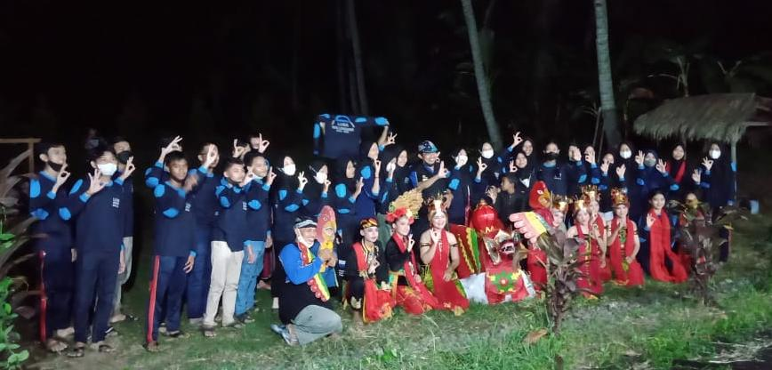

Data Diri
| Nama | : | Agung Febriyanto |
| NIM | : | 1120101867 |
| Kelas | : | SM3.1 |
| TTL | : | Probolinggo, 25 Februari 2001 |
| Alamat | : | Dsn.Bades, Ds.Karangbendo, Kec.Rogojampi |
Riwayat Pendidikan
- TK Kartika (2005 - 2007)
- SDN 1 Karangbendo (2007 - 2013)
- SMPN 2 Rogojampi (2013 - 2016)
- SMKN 1 Banyuwangi (2016 - 2019)
Pengalaman Organisasi
Pernah menjadi anggota OSIS SMP Negeri 2 Rogojampi selama 2 periode yakni pada tahun 2013 - 2015, saat kelas 7 dan 8 SMP
Hard Skill
Menguasai Microsoft Office - Bekerja sebagai staff administrasi instansi
Mengolah Data - Terbiasa melakukan pekerjaan yang berhubungan dengan data